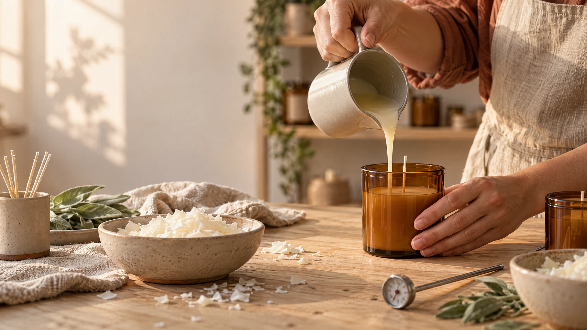
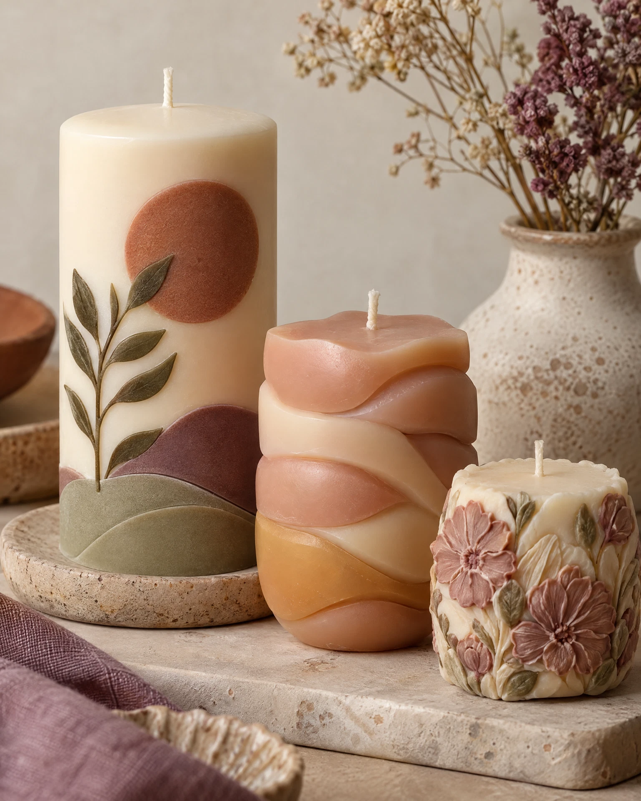
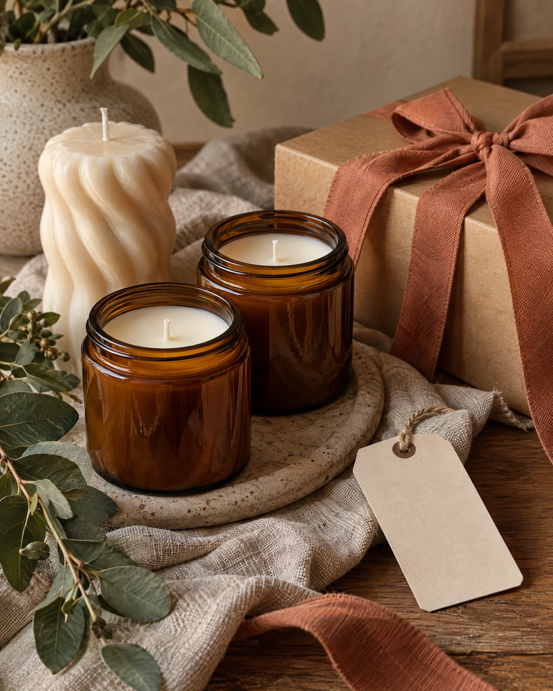

01
FORMAS Y CAPAS
Velas con estilo postre
Cupcakes, tartaletas, helados y otras formas decorativas anunciadas en el curso.
VELAS ARTESANALES · NIVEL INICIAL
Explora ceras, aromas y técnicas decorativas, además de nociones de costos y presentación para preparar tus propias creaciones.
Aprender una técnica no garantiza ventas ni ingresos; cada proyecto requiere práctica y atención a la seguridad.

IDEAS PARA EXPLORAR
Del recipiente aromático a una vela decorativa o de estilo postre: el temario reúne distintas formas, acabados y usos para que practiques y descubras cuáles te gusta crear.
FORMAS Y CAPAS
Cupcakes, tartaletas, helados y otras formas decorativas anunciadas en el curso.

02MOLDES Y RELIEVES
Prueba formatos de molde, capas de color y acabados decorativos.

03AROMAS Y PRESENTACIÓN
Una idea de color, aroma y empaque puede convertir una vela en un regalo personal.
Imágenes ilustrativas de velas artesanales; no representan necesariamente las piezas exactas de las clases ni el material recibido.
TU RUTA CREATIVA
Una ruta progresiva ayuda a entender los materiales antes de probar técnicas. La oferta organiza las lecciones desde las bases de la cera hasta proyectos y nociones de presentación.
Ver lo que incluyeIdentifica tipos de cera, moldes, pabilos y recomendaciones que aparecen en el programa.
Aprende sobre opciones de pigmentación y aromas, siguiendo siempre las instrucciones del material específico.
Ensaya velas en recipiente y molde, capas, formas decorativas y proyectos especiales.
El temario anuncia nociones de costos, precio, identidad de marca y proveedores.
EL VALOR ESTÁ EN EL PROCESO
Personalizar una combinación, cuidar el acabado y mostrar cómo se hizo ayuda a que cada pieza tenga su propia historia. Las fotografías de cerca y el proceso real también permiten apreciar el trabajo artesanal.
Personalización y actividades DIY aparecen en reportes de Etsy y Pinterest; son tendencias amplias, no una garantía de ventas de velas o cursos.
QUÉ ANUNCIA LA OFERTA
El curso, impartido por Yuly Mar Rivas según la página de venta, se presenta con clases en video para estudiar a tu ritmo.
Más de 60 clases, según la descripción pública del curso.
Materiales, tipos de cera, cálculos, pabilos, aditivos, moldes, color y aroma.
Velas en envase y molde, flores, capas, marmoleado, estilos tipo postre, wax melts y más.
La página anuncia lecciones sobre cálculo de costos, precio, identidad de marca y tarjetas de agradecimiento.
Entre las clases y extras publicados: velas geoda, técnica coral, fanal vitral, bouquet, ambientadores y portavelas.
Temario resumido a partir de la página de venta. La disponibilidad de lecciones, bonos, comunidad y acceso puede cambiar; comprueba el detalle vigente en Hotmart.
El acceso corresponde al contenido digital que ofrezca el vendedor. No des por incluidos cera, fragancias, recipientes, moldes ni herramientas hasta confirmarlo en el checkout.
CREAR CON CUIDADO
La cera caliente y los aromas requieren atención. Sigue las etiquetas e instrucciones de cada fabricante y consulta sus fichas de seguridad. Al encender una vela, usa una superficie estable, mantén al menos 30 cm de distancia de materiales que puedan arder y nunca la dejes sin vigilancia.
Más recomendaciones de seguridad de la National Candle Association ↗ANTES DE EMPEZAR
Resuelve las dudas principales y confirma en la plataforma los detalles actuales de la oferta.
Consultar el checkout ↗La página del curso lo presenta como una formación desde cero. Dedica tiempo a practicar cada técnica y a seguir las instrucciones de los materiales que uses.
El temario público enumera ceras, aromas, moldes, velas en recipiente y molde, capas, marmoleado, estilos tipo postre, wax melts, técnicas decorativas y nociones de marca. Revisa la ficha por si el contenido cambió.
El checkout consultado mostró US$37 para país EE. UU. Hotmart puede ajustar moneda e impuestos según el país. Comprueba el total que aparezca antes de pagar.
La página indica que el curso orienta sobre los materiales y proveedores, pero no presupongas que cera, fragancias, moldes o herramientas estén incluidos. Confirma el alcance con el vendedor.
La página de venta anuncia una garantía de 7 días. Consulta en Hotmart los requisitos y condiciones aplicables a tu compra; la ficha de checkout puede actualizarse.
No. El curso puede enseñar técnicas y nociones de costos/marca, pero las ventas, los ingresos y la recuperación de una inversión dependen del producto, la práctica, los costos, el canal y la demanda de cada mercado.
Consulta las recomendaciones del fabricante. Como referencia, la National Candle Association aconseja no dejar una vela encendida sin vigilancia y mantenerla lejos de materiales combustibles.
TU SIGUIENTE PASO CREATIVO
Explora el temario, revisa el precio actualizado en tu moneda y confirma qué incluye la oferta.
Ver curso en Hotmart